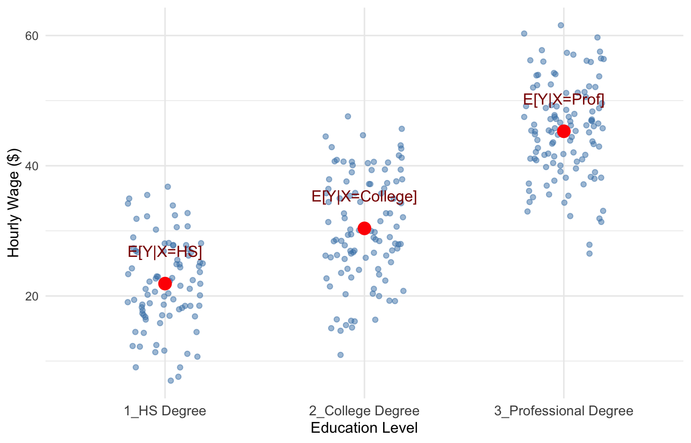
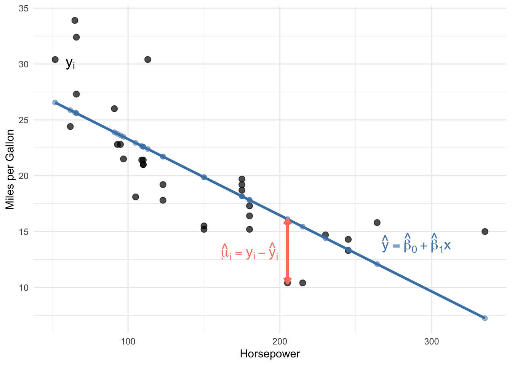
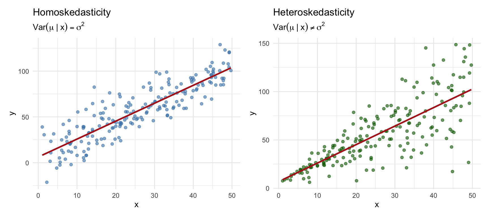
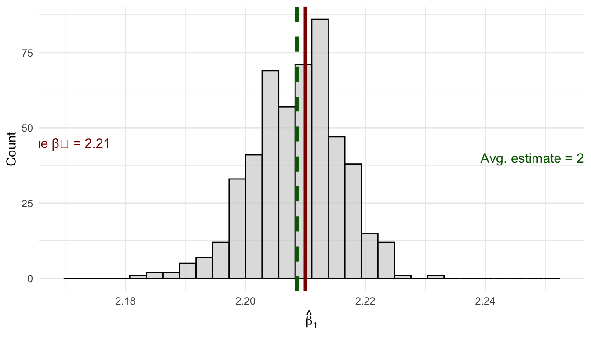

4 Bivariate Regression and Ordinary Least Squares
TipKey Questions
- How do we mathematically model the relationship between two variables?
- What is the population regression model and how do we interpret its parameters?
- How do we derive the OLS estimator?
- What assumptions are required for OLS to be unbiased?
- What is omitted variable bias and when does it arise?
- When can we interpret OLS estimates as causal effects?
- How do we measure the precision of our estimates?
NoteSuggested Readings
- Wooldridge (2019), Ch. 2
In sec-rcts, we learned that randomized control trials provide the gold standard for causal inference by eliminating selection bias through random assignment. But most economic questions cannot be answered with experiments. We typically work with observational data where “treatment” is not randomly assigned. This chapter introduces Ordinary Least Squares (OLS) regression, the workhorse tool of econometrics. We focus here on the bivariate case—a single independent variable—to build intuition before extending to multiple variables.
4.1 Modeling Relationships Between Variables
Suppose we have two variables, \(y\) and \(x\). In econometrics, we are often interested in one of several related goals: estimating the causal effect of \(x\) on \(y\), explaining variation in \(y\) using \(x\), or simply describing how \(y\) varies with \(x\). OLS is a tool that can help with all of these—though as we’ll see, whether we can interpret results causally depends on assumptions that may or may not hold.
But what do we even mean when we say we want to study “how \(x\) is related to \(y\)”? We need a precise, mathematical way to operationalize this question. The most straightforward approach is to ask: what is the average value of \(y\) for each different value that \(x\) can take?
Consider some examples. How can we quantify the gender pay gap? We compare the average wage for men versus women. How do we measure the returns to education? We compare the average wage of people with different levels of education. In both cases, we are asking about how the average of one variable changes across values of another.
4.1.1 Conditional Expectations
This idea of finding “the average value of \(y\) for a given value of \(x\)” is exactly what we call the conditional expectation. Formally, the conditional expectation of \(y\) given \(x\) is written as:
\[ E[Y | X = x] \]
This notation asks: if we knew that \(X\) took on some specific value \(x\), what would we expect \(Y\) to be, on average? The conditional expectation is often the central quantity we want to model and estimate in econometrics.
4.1.2 Example: Education and Wages
Suppose \(X\) represents education level, which can take values \(X = \{\text{hsdeg}, \text{colldeg}, \text{profdeg}\}\) (high school degree, college degree, professional degree), and \(Y\) represents hourly wage.
For each education level, we can compute the average wage among people in that group. This will gives us a good idea of how wages are related to education.
Figure fig-cond-exp-example is a scatterplot with an indiviudal’s wage on the y-axis and their education level on the x-axis, with each point plotted in blue. The red points in Figure fig-cond-exp-example show the conditional expectations—the average wage for individuals within each education category, i.e., \(E[Y|X=HS], E[Y|X=College], \text{and} E[Y|X=Prof]\).
These averages tell us how we can expect wages to change when we increase education, which is precisely what we set out to measure.
4.2 The Population Regression Model
Now that we understand what we want to estimate (the conditional expectation), we need a framework for how to estimate it. Before we can estimate anything, we must first describe the underlying relationship we believe exists in the population.
4.2.1 The Bivariate Model
The simplest specification is called the bivariate (or simple) regression model:
\[ y = \beta_0 + \beta_1 x + \mu \tag{4.1}\]
where:
- \(y\) is the dependent variable (also called the explained, response, or outcome variable)
- \(x\) is the independent variable (also called the explanatory, control, or predictor variable)
- \(\mu\) is the error term, which represents all unobserved factors that affect \(y\)
- \(\beta_0\) and \(\beta_1\) are population parameters—the “true” values describing the relationship between \(x\) and \(y\) in the population
NoteThe Error Term
The error term \(\mu\) is crucial. It captures everything that affects \(y\) other than \(x\). In a wage equation, \(\mu\) might include ability, motivation, family connections, luck, and countless other factors we cannot observe or measure.
4.2.2 Connecting to Conditional Expectations
How does this regression model relate to our goal of estimating \(E[Y|X]\)? If we assume that the error term has mean zero conditional on \(x\)—that is, \(E[\mu | x] = 0\)—then:
\[ E[y | x] = E[\beta_0 + \beta_1 x + \mu | x] = \beta_0 + \beta_1 x + E[\mu | x] = \beta_0 + \beta_1 x \]
This is exactly the conditional expectation we set out to estimate! The regression line \(\beta_0 + \beta_1 x\) traces out the average value of \(y\) for each value of \(x\).
4.2.3 Interpreting the Coefficients
The coefficients in Equation eq-pop-reg have specific interpretations:
\(\beta_0\) (the intercept): The predicted value of \(y\) when \(x = 0\). Depending on the context, this may or may not have a meaningful interpretation.
\(\beta_1\) (the slope): The marginal effect of \(x\) on \(y\). Mathematically, it is the derivative:
\[ \frac{dy}{dx} = \beta_1 \]
This tells us: when \(x\) increases by one unit, \(y\) changes by \(\beta_1\) units, on average.
4.2.4 Example: Education and Wages
A regression model relating years of education to hourly wages might be:
\[ wage = \beta_0 + \beta_1 \cdot educ + \mu \]
where \(wage\) is dollars per hour, \(educ\) is years of education, and \(\mu\) captures all other determinants of wages (experience, ability, etc.).
If \(\beta_1 = 2.50\), this would mean that each additional year of education is associated with $2.50 higher hourly wages, on average.
4.3 The Regression Line: Predicted Values and Residuals
The entire goal of linear regression is to use our sample of the data from the wider population to estimate the values of \(\beta_0\) and \(\beta_1\) that are the best possible estimates we can generate. We call these estimates \(\hat{\beta_0}\) and \(\hat{\beta_1}\), and the method we use to calculate these estimates the estimator. We can never actually get the true population values \(\beta_0\) and \(\beta_1\); we have to rely on estimates!
Before we derive estimators for \(\beta_0\) and \(\beta_1\), let’s introduce some key concepts that will guide our approach.
4.3.1 Fitted Values and the Regression Line
Once we have estimates \(\hat{\beta}_0\) and \(\hat{\beta}_1\), we can construct the OLS regression line (or fitted line):
\[ \hat{y} = \hat{\beta}_0 + \hat{\beta}_1 x \]
For any value of \(x\), this line gives us \(\hat{y}\), the predicted value (or fitted value) of \(y\). The regression line represents our best guess for the average value of \(y\) at each level of \(x\).
4.3.2 Residuals: The Prediction Errors
Of course, our predictions won’t be perfect. The residual for observation \(i\) is the difference between the actual value and the predicted value:
\[ \hat{\mu}_i = y_i - \hat{y}_i = y_i - (\hat{\beta}_0 + \hat{\beta}_1 x_i) \]
The residual measures how much our prediction “misses” for each observation. Positive residuals mean we underpredicted; negative residuals mean we overpredicted.

4.3.3 A Numerical Example
Let’s see these concepts with actual numbers. The table below shows the first six observations from a regression of MPG on horsepower, along with the predicted values and residuals:
| x (Horsepower) | y (MPG) | ŷ (Predicted) | û (Residual) | |
|---|---|---|---|---|
| Mazda RX4 | 110 | 21.0 | 22.59 | -1.59 |
| Mazda RX4 Wag | 110 | 21.0 | 22.59 | -1.59 |
| Datsun 710 | 93 | 22.8 | 23.75 | -0.95 |
| Hornet 4 Drive | 110 | 21.4 | 22.59 | -1.19 |
| Hornet Sportabout | 175 | 18.7 | 18.16 | 0.54 |
| Valiant | 105 | 18.1 | 22.93 | -4.83 |
Notice how the residual column equals the actual value minus the predicted value. For the first observation, the car has 110 horsepower and gets 21 MPG. Our regression predicts it should get about 22.59 MPG, so the residual is \(21 - 22.59 = -1.59\). The negative residual means we overpredicted—the car actually gets slightly worse fuel economy than our model predicted.
4.3.4 The Goal: Minimize the Residuals
Here’s the crucial idea: we want to choose \(\hat{\beta}_0\) and \(\hat{\beta}_1\) so that our predictions are as good as possible. In other words, we want to make the residuals as small as possible.
But we can’t simply minimize the sum of residuals \(\sum \hat{\mu}_i\), because positive and negative residuals would cancel out. Instead, we minimize the Sum of Squared Residuals (SSR):
\[ SSR = \sum_{i=1}^{n} \hat{\mu}_i^2 = \sum_{i=1}^{n} (y_i - \hat{\beta}_0 - \hat{\beta}_1 x_i)^2 \]
This is exactly where the name “Ordinary Least Squares” comes from: we find the estimates that make the sum of squared residuals as small as possible.
4.4 Deriving the OLS Estimator
Now we turn to the mechanics of estimation. The population regression model describes the true relationship, but we never observe the entire population or the true values of \(\beta_0\) and \(\beta_1\). Instead, we have a sample of data and must estimate the population parameters.
4.4.1 The Minimization Problem
Suppose we have a sample of \(n\) observations, \(\{(x_i, y_i): i = 1, 2, ..., n\}\). As discussed above, we want to find the values of \(\hat{\beta}_0\) and \(\hat{\beta}_1\) that minimize the sum of squared residuals:
\[ \min_{\hat{\beta}_0, \hat{\beta}_1} \sum_{i=1}^{n} (y_i - \hat{\beta}_0 - \hat{\beta}_1 x_i)^2 \]
This is a calculus optimization problem! The SSR is a function of two unknowns (\(\hat{\beta}_0\) and \(\hat{\beta}_1\)), and we want to find the values that minimize it.
4.4.2 First-Order Conditions
To find the minimum, we take partial derivatives with respect to each parameter, set them equal to zero, and solve. These are called the first-order conditions.
Partial derivative with respect to \(\hat{\beta}_0\):
\[ \frac{\partial SSR}{\partial \hat{\beta}_0} = -2 \sum_{i=1}^{n} (y_i - \hat{\beta}_0 - \hat{\beta}_1 x_i) = 0 \]
Dividing by \(-2\) and rearranging:
\[ \sum_{i=1}^{n} (y_i - \hat{\beta}_0 - \hat{\beta}_1 x_i) = 0 \]
Partial derivative with respect to \(\hat{\beta}_1\):
\[ \frac{\partial SSR}{\partial \hat{\beta}_1} = -2 \sum_{i=1}^{n} x_i(y_i - \hat{\beta}_0 - \hat{\beta}_1 x_i) = 0 \]
Dividing by \(-2\):
\[ \sum_{i=1}^{n} x_i(y_i - \hat{\beta}_0 - \hat{\beta}_1 x_i) = 0 \]
4.4.3 Solving for the Intercept
From the first condition, distributing the summation:
\[ \sum_{i=1}^{n} y_i - n\hat{\beta}_0 - \hat{\beta}_1 \sum_{i=1}^{n} x_i = 0 \]
Dividing by \(n\) and recognizing sample means:
\[ \bar{y} = \hat{\beta}_0 + \hat{\beta}_1 \bar{x} \]
Solving for the intercept:
\[ \hat{\beta}_0 = \bar{y} - \hat{\beta}_1 \bar{x} \tag{4.2}\]
This tells us that the regression line always passes through the point \((\bar{x}, \bar{y})\)—the “center” of the data.
4.4.4 Solving for the Slope
Substituting Equation eq-b0-formula into the second first-order condition and working through the algebra (using summation properties from sec-stats-review):
\[ \sum_{i=1}^{n} x_i[y_i - (\bar{y} - \hat{\beta}_1\bar{x}) - \hat{\beta}_1 x_i] = 0 \]
After distributing and rearranging:
\[ \sum_{i=1}^{n} x_i(y_i - \bar{y}) = \hat{\beta}_1 \sum_{i=1}^{n} x_i(x_i - \bar{x}) \]
Using the summation properties \(\sum x_i(y_i - \bar{y}) = \sum(x_i - \bar{x})(y_i - \bar{y})\) and \(\sum x_i(x_i - \bar{x}) = \sum(x_i - \bar{x})^2\)1:
\[ \sum_{i=1}^{n} (x_i - \bar{x})(y_i - \bar{y}) = \hat{\beta}_1 \sum_{i=1}^{n} (x_i - \bar{x})^2 \]
Solving for \(\hat{\beta}_1\):
\[ \hat{\beta}_1 = \frac{\sum_{i=1}^{n}(x_i - \bar{x})(y_i - \bar{y})}{\sum_{i=1}^{n}(x_i - \bar{x})^2} \tag{4.3}\]
4.4.5 Confirming It’s a Minimum
How do we know this critical point is a minimum rather than a maximum? We check the second-order conditions. The second partial derivative of SSR with respect to \(\hat{\beta}_1\) is:
\[ \frac{\partial^2 SSR}{\partial \hat{\beta}_1^2} = 2\sum_{i=1}^{n} x_i^2 > 0 \]
Since this is positive (as long as there’s variation in \(x\)), the SSR function is convex, and our solution is indeed a minimum.
ImportantThe OLS Slope Formula
The OLS slope estimate equals the sample covariance of \(x\) and \(y\) divided by the sample variance of \(x\):
\[ \hat{\beta}_1 = \frac{Cov(x, y)}{Var(x)} = \frac{\sum(x_i - \bar{x})(y_i - \bar{y})}{\sum(x_i - \bar{x})^2} \]
This can also be written in terms of the correlation coefficient: \[ \hat{\beta}_1 = \rho_{xy} \frac{\sigma_y}{\sigma_x} \]
This last expression reveals something important: bivariate OLS is essentially a scaled version of the correlation between \(x\) and \(y\). And as we discussed in sec-introduction, correlation does not imply causation! We must be very careful about interpreting bivariate OLS results causally.
4.5 A Worked Example by Hand
Before we let R do the heavy lifting, let’s apply the OLS formulas to a tiny dataset to make sure we understand what’s going on. Suppose we survey 5 workers and record their years of education (\(x\)) and hourly wage in dollars (\(y\)):
| Worker | \(x_i\) (Years of Education) | \(y_i\) (Hourly Wage) |
|---|---|---|
| 1 | 10 | 12 |
| 2 | 12 | 15 |
| 3 | 14 | 17 |
| 4 | 16 | 22 |
| 5 | 18 | 24 |
4.5.1 Step 1: Compute the Means
\[ \bar{x} = \frac{10 + 12 + 14 + 16 + 18}{5} = \frac{70}{5} = 14 \]
\[ \bar{y} = \frac{12 + 15 + 17 + 22 + 24}{5} = \frac{90}{5} = 18 \]
4.5.2 Step 2: Compute the Deviations
We need \((x_i - \bar{x})\), \((y_i - \bar{y})\), their product, and \((x_i - \bar{x})^2\):
| \(x_i\) | \(y_i\) | \(x_i - \bar{x}\) | \(y_i - \bar{y}\) | \((x_i - \bar{x})(y_i - \bar{y})\) | \((x_i - \bar{x})^2\) |
|---|---|---|---|---|---|
| 10 | 12 | −4 | −6 | 24 | 16 |
| 12 | 15 | −2 | −3 | 6 | 4 |
| 14 | 17 | 0 | −1 | 0 | 0 |
| 16 | 22 | 2 | 4 | 8 | 4 |
| 18 | 24 | 4 | 6 | 24 | 16 |
| Sum | 62 | 40 |
Notice that the deviations \((x_i - \bar{x})\) sum to zero, just as Result 1 in sec-stats-review promises.
4.5.3 Step 3: Compute the Slope
Applying Equation eq-b1-formula:
\[ \hat{\beta}_1 = \frac{\sum(x_i - \bar{x})(y_i - \bar{y})}{\sum(x_i - \bar{x})^2} = \frac{62}{40} = 1.55 \]
Each additional year of education is associated with $1.55 higher hourly wages in our sample.
4.5.4 Step 4: Compute the Intercept
Applying Equation eq-b0-formula:
\[ \hat{\beta}_0 = \bar{y} - \hat{\beta}_1 \bar{x} = 18 - 1.55 \times 14 = 18 - 21.7 = -3.7 \]
Our estimated regression line is:
\[ \hat{y}_i = -3.7 + 1.55 \, x_i \]
The intercept (−3.7) is the predicted wage for someone with zero years of education. This doesn’t have a meaningful real-world interpretation here—nobody in our data has zero years of education—but the intercept is still necessary for the line to fit the data correctly.
4.5.5 Step 5: Check Fitted Values and Residuals
Let’s plug each \(x_i\) into our equation and compute the residuals \(\hat{\mu}_i = y_i - \hat{y}_i\):
| \(x_i\) | \(y_i\) | \(\hat{y}_i\) | \(\hat{\mu}_i = y_i - \hat{y}_i\) |
|---|---|---|---|
| 10 | 12 | 11.8 | 0.2 |
| 12 | 15 | 14.9 | 0.1 |
| 14 | 17 | 18.0 | −1.0 |
| 16 | 22 | 21.1 | 0.9 |
| 18 | 24 | 24.2 | −0.2 |
| Sum of residuals | 0.0 |
As expected, the residuals sum to zero. This isn’t a coincidence—it’s guaranteed by the first-order condition from Section 4.4.2, which requires \(\sum(y_i - \hat{\beta}_0 - \hat{\beta}_1 x_i) = 0\).
TipTry It Yourself
Before moving on, try reproducing this example on paper or in a calculator. Getting comfortable with the mechanics of these formulas will make everything that follows easier to understand.
4.6 Computing OLS in R
While we derived the formulas by hand, in practice we use software to compute OLS estimates. In R, the lm() function (for “linear model”) performs OLS regression.
4.6.1 Basic Syntax
# General syntax
lm(y ~ x, data = your_data)The formula y ~ x specifies that \(y\) is the dependent variable and \(x\) is the independent variable. An intercept is included by default.
4.6.2 Example: MPG and Horsepower
Let’s estimate the relationship between fuel efficiency (MPG) and engine horsepower using the built-in mtcars dataset:
# Load the data
data(mtcars)
# Estimate the regression
lm_mpg <- lm(mpg ~ hp, data = mtcars)
# View the results
summary(lm_mpg)
Call:
lm(formula = mpg ~ hp, data = mtcars)
Residuals:
Min 1Q Median 3Q Max
-5.7121 -2.1122 -0.8854 1.5819 8.2360
Coefficients:
Estimate Std. Error t value Pr(>|t|)
(Intercept) 30.09886 1.63392 18.421 < 2e-16 ***
hp -0.06823 0.01012 -6.742 1.79e-07 ***
---
Signif. codes: 0 '***' 0.001 '**' 0.01 '*' 0.05 '.' 0.1 ' ' 1
Residual standard error: 3.863 on 30 degrees of freedom
Multiple R-squared: 0.6024, Adjusted R-squared: 0.5892
F-statistic: 45.46 on 1 and 30 DF, p-value: 1.788e-07The output shows our estimates: \(\hat{\beta}_0 = 30.10\) and \(\hat{\beta}_1 = -0.07\). The slope suggests that each additional unit of horsepower is associated with about 0.07 fewer miles per gallon. Similarly, according to this estimate, a car with 50 additional horsepower is associated with about 3.5 (\(50 \times 0.07\)) fewer miles per gallon.
A one-unit increase isn’t always the most meaningful way to think about a coefficient. When the units of \(x\) are hard to interpret on their own, it can be helpful to consider a one standard deviation increase instead. In this dataset, the standard deviation of horsepower is about 68.6. So a one standard deviation increase in horsepower is associated with a change in fuel economy of roughly \(68.6 \times (-0.07) \approx 4.8\) fewer miles per gallon. This gives a better sense of what a “typical” difference in horsepower implies for fuel economy.
4.7 Goodness-of-Fit: R-Squared
How well does our regression line fit the data? The R-squared (\(R^2\)) provides one measure of goodness-of-fit.
Define:
- Total Sum of Squares (SST): \(SST = \sum_{i=1}^{n}(y_i - \bar{y})^2\) — total variation in \(y\)
- Explained Sum of Squares (SSE): \(SSE = \sum_{i=1}^{n}(\hat{y}_i - \bar{y})^2\) — variation explained by the regression
- Residual Sum of Squares (SSR): \(SSR = \sum_{i=1}^{n}\hat{\mu}_i^2\) — unexplained variation
The R-squared is:
\[ R^2 = \frac{SSE}{SST} = 1 - \frac{SSR}{SST} \]
This measures the fraction of the total variation in \(y\) that is explained by the regression. \(R^2\) ranges from 0 (no explanatory power) to 1 (perfect fit). We usually interpret the calculated value as a percent. For example if the \(R^2 = 0.386\), you might say something the model *explains about \(39\%\) of the variation in \(y\).
WarningInterpreting R-Squared
Be careful interpreting \(R^2\), especially in the context of causal inference. A high \(R^2\) does not mean we have a causal estimate—it just means \(x\) is correlated with \(y\). Conversely, a low \(R^2\) does not mean our estimate is wrong or unimportant. In cross-sectional data, \(R^2\) values of 0.1 to 0.3 are common and can still represent economically meaningful relationships.
4.8 The Gauss-Markov Assumptions
We’ve derived the OLS formulas, but how do we know if the estimates are any good? The formulas will always give us some numbers, but whether those numbers have useful statistical properties depends on certain conditions being met.
The Gauss-Markov assumptions are a set of conditions under which OLS has desirable properties. Understanding these assumptions is crucial: they tell us when we can trust our estimates and when we should be skeptical.
4.8.1 Assumption 1: Linear in Parameters
NoteGauss-Markov Assumption 1: Linear in Parameters
The population model is: \(y = \beta_0 + \beta_1 x + \mu\)
This assumption states that the dependent variable \(y\) can be written as a linear function of the parameters \(\beta_0\) and \(\beta_1\), plus an error term.
What this does NOT mean: This assumption is less restrictive than it might first appear. It does not require that \(y\) and \(x\) have a linear relationship. We can model many non-linear relationships by transforming the variables. For example:
- \(y = \beta_0 + \beta_1 x^2 + \mu\) is linear in parameters (we can define \(z = x^2\) and estimate \(y = \beta_0 + \beta_1 z + \mu\))
- \(\log(y) = \beta_0 + \beta_1 x + \mu\) is linear in parameters
- \(y = \beta_0 + \beta_1 \log(x) + \mu\) is linear in parameters
What would violate this assumption: Models where parameters enter non-linearly, such as \(y = \beta_0 + x^{\beta_1} + \mu\) or \(y = \frac{1}{1 + e^{-\beta_0 - \beta_1 x}} + \mu\) (a logistic function). These require different estimation techniques.
4.8.2 Assumption 2: Random Sampling
NoteGauss-Markov Assumption 2: Random Sampling
We have a random sample of size \(n\) from the population: \(\{(x_i, y_i): i = 1, ..., n\}\)
This assumption states that each observation in our dataset is drawn randomly and independently from the population of interest. Each unit in the population has an equal chance of being selected, and the selection of one unit doesn’t affect the probability of selecting another.
Why it matters: Random sampling ensures that our sample is representative of the population. If certain types of observations are more likely to be included, our estimates may not generalize to the full population.
When this might be violated:
Self-selection: If people choose whether to participate in a survey, those who respond may differ systematically from those who don’t. For example, a wage survey might oversample high earners if low-wage workers are less likely to respond.
Convenience sampling: Surveying only people who are easy to reach (e.g., college students for a study about the general population).
Time series data: Observations collected over time are often correlated with each other. Today’s stock price depends on yesterday’s stock price, violating independence.
Clustered data: Students within the same classroom, or workers within the same firm, may be more similar to each other than to randomly selected individuals.
4.8.3 Assumption 3: Variation in the Independent Variable
NoteGauss-Markov Assumption 3: Sample Variation in \(x\)
The independent variable has some variation in the sample: \(\sum(x_i - \bar{x})^2 > 0\)
This assumption simply requires that \(x\) is not constant in our sample. If everyone in our sample has the same value of \(x\), we cannot estimate how changes in \(x\) relate to changes in \(y\).
Why it matters: Look back at our formula for \(\hat{\beta}_1\):
\[ \hat{\beta}_1 = \frac{\sum(x_i - \bar{x})(y_i - \bar{y})}{\sum(x_i - \bar{x})^2} \]
If all \(x_i\) equal \(\bar{x}\), the denominator is zero, and the formula is undefined. Intuitively, if everyone has 12 years of education, we have no way to estimate what would happen with 13 years of education.
In practice: This assumption is almost always satisfied. It would only fail in unusual circumstances, like if you accidentally collected a sample where everyone happened to have the exact same value of \(x\). However, having little variation in \(x\) (even if not zero) can lead to imprecise estimates, as we’ll see when discussing variance.
4.8.4 Assumption 4: Zero Conditional Mean
NoteGauss-Markov Assumption 4: Zero Conditional Mean
The expected value of the error term is zero for any value of \(x\): \(E[\mu | x] = 0\)
This is the most important and most frequently violated assumption. It states that the average value of all the unobserved factors affecting \(y\) is the same regardless of the value of \(x\).
Understanding the assumption: Let’s break this down carefully. The error term \(\mu\) contains everything that affects \(y\) other than \(x\). The zero conditional mean assumption says that if we could collect all people with \(x = 10\) and compute the average of their \(\mu\) values, it would be zero. And if we collected all people with \(x = 20\) and averaged their \(\mu\) values, that would also be zero. The average of unobservables is the same at every level of \(x\).
Example: Education and Wages
Consider the regression: \[wage = \beta_0 + \beta_1 \cdot educ + \mu\]
The error term \(\mu\) includes ability, motivation, family connections, and other unobserved factors. The zero conditional mean assumption requires:
\[E[\mu | educ = 8] = E[\mu | educ = 12] = E[\mu | educ = 16] = 0\]
Is this plausible? Probably not. People with higher ability tend to get more education (because school is easier for them, or because they enjoy learning). So among people with 16 years of education, average ability is probably higher than among people with 8 years. This means \(E[\mu | educ = 16] > E[\mu | educ = 8]\), violating the assumption.
Why it matters: When this assumption fails, OLS is biased. The estimate \(\hat{\beta}_1\) will systematically overshoot or undershoot the true \(\beta_1\). In the education example, if high-ability people get more education, our estimate of the “return to education” will partly capture the “return to ability,” making education look more valuable than it really is.
This is the essence of omitted variable bias, which we’ll explore in more detail in sec-multivariate.
4.8.5 Assumption 5: Homoskedasticity
NoteGauss-Markov Assumption 5: Homoskedasticity
The variance of the error term is constant across all values of \(x\): \(Var(\mu | x) = \sigma^2\)
This assumption states that the spread of the error term is the same regardless of the value of \(x\). The “noise” in our data is equally noisy everywhere.
Understanding the assumption: While Assumption 4 concerns the mean of \(\mu\) at different values of \(x\), Assumption 5 concerns the variance. Homoskedasticity (from Greek: “same scatter”) means the scatter of points around the regression line is constant. Heteroskedasticity (different scatter) occurs when the variance of \(\mu\) depends on \(x\).
Example: Income and Spending
Consider a regression of consumption spending on income. For low-income households, spending is relatively constrained—there’s not much room for variation because most income goes to necessities. For high-income households, there’s much more discretion in spending patterns, leading to greater variation. This would create heteroskedasticity: \(Var(\mu | income)\) increases with income.

Why it matters: Unlike Assumption 4, violating homoskedasticity does not make OLS biased. Your estimate of \(\beta_1\) is still centered on the true value. However, heteroskedasticity affects the variance and standard errors of the estimator. The usual standard error formulas become incorrect, which can lead to invalid hypothesis tests and confidence intervals.
We’ll discuss how to handle heteroskedasticity later in the course using robust standard errors.
4.8.6 Summary: Which Assumptions Matter for What?
Assumptions 1–4 (linearity in parameters, random sampling, variation in \(x\), and zero conditional mean) are all required for OLS to be unbiased—that is, for the estimator to hit the true parameter values on average. If any one of these assumptions fails, OLS may systematically over- or under-estimate the true \(\beta_0\) and \(\beta_1\).
Assumption 5 (homoskedasticity) is not needed for unbiasedness. Even if this fails, OLS still gets the right answer on average. However, homoskedasticity is required for an additional property:
NoteBLUE
If all five Gauss-Markov assumptions hold, OLS is the Best Linear Unbiased Estimator (BLUE). The Gauss–Markov theorem tells us that when all five assumptions hold, OLS has the smallest variance among all estimators that are (a) linear functions of the outcome variable \(y\) and (b) unbiased. In other words, no other linear unbiased estimator can produce more precise estimates than OLS. When assumption 5 fails, OLS is still unbiased, but it is no longer the most efficient—other estimators could do better.
4.9 Unbiasedness of OLS
4.9.1 Population Parameters vs. Sample Estimates
Before discussing unbiasedness, recall an important distinction we introduced in sec-stats-review: the difference between the population and the sample.
The population represents the entire group we’re interested in studying. In our wage-education example, the population might be all workers in the U.S. economy. The population regression model describes the true relationship in this population:
\[ y = \beta_0 + \beta_1 x + \mu \]
The parameters \(\beta_0\) and \(\beta_1\) are population parameters—fixed, unknown constants that describe how \(x\) and \(y\) are related for everyone in the population. We never observe these true values directly.
Instead, we collect a sample—a subset of observations from the population. Using this sample, we compute estimates \(\hat{\beta}_0\) and \(\hat{\beta}_1\). These estimates are our best guesses for the unknown population parameters.
Critically, if we drew a different sample, we would get different estimates. Your classmate analyzing a different random sample of workers would compute different values of \(\hat{\beta}_0\) and \(\hat{\beta}_1\) than you would, even though the population and regression model are the same. This randomness in the estimates is called sampling variability.
4.9.2 What Does Unbiasedness Mean?
Given that estimates vary from sample to sample, how do we know if our specific estimation is any good? One desirable property is unbiasedness.
An estimator \(\hat{\theta}\) is unbiased if its expected value equals the true population parameter:
\[ E[\hat{\theta}] = \theta \]
Unbiasedness does not mean that any particular estimate exactly equals the truth. Rather, it means that if we could:
- Draw a random sample from the population
- Compute \(\hat{\beta}_1\) from that sample
- Repeat steps 1-2 many, many times
- Average all the \(\hat{\beta}_1\) values we computed
…then that average would equal the true \(\beta_1\).
In other words, our estimation procedure doesn’t systematically overshoot or undershoot the target. Individual estimates might be too high or too low, but on average, we get it right.
4.9.3 Proof Sketch
We start from the OLS slope formula (Equation eq-b1-formula):
\[ \hat{\beta}_1 = \frac{\sum_{i=1}^{n}(x_i - \bar{x})(y_i - \bar{y})}{\sum_{i=1}^{n}(x_i - \bar{x})^2} \]
Now substitute the true population model \(y_i = \beta_0 + \beta_1 x_i + \mu_i\) into the numerator. Since \(\bar{y} = \beta_0 + \beta_1 \bar{x} + \bar{\mu}\), we get \(y_i - \bar{y} = \beta_1(x_i - \bar{x}) + (\mu_i - \bar{\mu})\). Plugging this in:
\[ \hat{\beta}_1 = \frac{\sum_{i=1}^{n}(x_i - \bar{x})[\beta_1(x_i - \bar{x}) + (\mu_i - \bar{\mu})]}{\sum_{i=1}^{n}(x_i - \bar{x})^2} \]
Distributing the numerator and splitting the fraction:
\[ \hat{\beta}_1 = \beta_1 \frac{\sum(x_i - \bar{x})^2}{\sum(x_i - \bar{x})^2} + \frac{\sum(x_i - \bar{x})(\mu_i - \bar{\mu})}{\sum(x_i - \bar{x})^2} \]
The first fraction equals 1, so:
\[ \hat{\beta}_1 = \beta_1 + \frac{\sum_{i=1}^{n}(x_i - \bar{x})\mu_i}{\sum_{i=1}^{n}(x_i - \bar{x})^2} \tag{4.4}\]
where the \(\bar{\mu}\) term drops out because \(\sum(x_i - \bar{x}) = 0\) (Result 1 from sec-stats-review).
This is a powerful decomposition. It says: our estimate = the truth + estimation error. The estimation error depends on how the unobserved errors \(\mu_i\) happen to line up with the \(x_i\) values in our particular sample.
Now take expectations. Treating the \(x_i\) as fixed (Assumption 2), the only random part is the \(\mu_i\) terms. Under the zero conditional mean assumption (\(E[\mu_i | x_i] = 0\)):
\[ E[\hat{\beta}_1] = \beta_1 + \frac{\sum_{i=1}^{n}(x_i - \bar{x}) \cdot 0}{\sum_{i=1}^{n}(x_i - \bar{x})^2} = \beta_1 \]
Thus, OLS is unbiased when the Gauss-Markov assumptions 1–4 hold.
4.9.4 Simulation: Unbiasedness in Action
NoteShow Code: Unbiasedness Simulation
# Create a "population" with known parameters
set.seed(1248)
n_pop <- 1000
x_pop <- sample(1:100, size = n_pop, replace = TRUE)
err_pop <- rnorm(n_pop)
# True model: y = 3.5 + 2.21*x + error
pop_data <- tibble(
x = x_pop,
y = 3.5 + 2.21 * x + err_pop
)
# Draw many samples and estimate beta_1 each time
set.seed(812476)
n_simulations <- 500
sample_size <- 25
sim_results <- map_dfr(1:n_simulations, function(i) {
# Draw a random sample
sample_data <- slice_sample(pop_data, n = sample_size, replace = TRUE)
# Estimate OLS
reg <- lm(y ~ x, data = sample_data)
tibble(
iteration = i,
b1_hat = coef(reg)[2]
)
})
# Calculate the average of all estimates
mean_b1 <- mean(sim_results$b1_hat)
The simulation in Figure fig-unbiasedness confirms the theory. Each of the 500 samples of size 25 produces a different estimate of \(\beta_1\)—some too high, some too low—because each sample is a different random draw from the population. This spread is sampling variability, and it is completely normal. The key thing about unbiasedness is that these estimates are centered on the true value of 2.21: the overestimates and underestimates cancel out on average, so the mean across all 500 estimates lands right on the truth.
4.9.5 When Can We Interpret \(\hat{\beta}_1\) Causally?
Consider our wage regression: \[wage = \beta_0 + \beta_1 \cdot educ + \mu\]
When \(E[\mu | educ] = 0\), our OLS estimate \(\hat{\beta}_1\) is unbiased for \(\beta_1\). But what does \(\beta_1\) actually represent?
If the zero conditional mean assumption holds, then \(\beta_1\) represents the causal effect of education on wages: how much wages would change if we could take a person and give them one more year of education, holding everything else constant. In this case, \(\hat{\beta}_1\) is an unbiased estimate of this causal effect.
But if \(E[\mu | educ] \neq 0\)—say, because high-ability people get more education—then \(\beta_1\) no longer represents a pure causal effect. It conflates the effect of education with the effect of ability. Our estimate \(\hat{\beta}_1\) is biased, and we cannot interpret it as the causal effect of education. In other words, our estimate \(\hat{\beta}_1\) reflects some selection bias, in that there is some systemic differences groups at different values of \(x\).
4.9.6 Correlation vs. Causation, Revisited
If our estimate \(\hat{\beta}_1\) can’t be interpreted causally, what is it?
Recall that the OLS slope can be written as: \[\hat{\beta}_1 = \rho_{xy} \frac{\sigma_y}{\sigma_x}\]
Bivariate OLS is fundamentally measuring the correlation between \(x\) and \(y\), scaled by their relative standard deviations. Correlation becomes causation only when the Gauss-Markov assumptions hold—especially the zero conditional mean assumption.
This is why we emphasize these assumptions so heavily. Without them:
- OLS still gives you numbers
- Those numbers still describe the correlation in your data
- But you cannot interpret those numbers as causal effects
4.10 Variance of the OLS Estimator
As discussed above, our OLS estimates will always–biased or unbiased–vary from sample to sample. The variance of \(\hat{\beta}_1\) tells us how much variation to expect amoung our different estimates.
In this section we derive the formula step by step.
4.10.1 Starting Point: Decomposing the Estimator
Recall from the unbiasedness proof that we can write:
\[ \hat{\beta}_1 = \beta_1 + \frac{\sum_{i=1}^{n}(x_i - \bar{x})\mu_i}{\sum_{i=1}^{n}(x_i - \bar{x})^2} \]
Since \(\beta_1\) is a constant, the variance of \(\hat{\beta}_1\) comes entirely from the second term:
\[ Var(\hat{\beta}_1) = Var\left(\frac{\sum_{i=1}^{n}(x_i - \bar{x})\mu_i}{\sum_{i=1}^{n}(x_i - \bar{x})^2}\right) \]
4.10.2 Treating the Denominator as a Constant
Under Assumptions 2 and 3 (random sampling and variation in \(x\)), we treat the \(x_i\) values as fixed (or condition on them). This means \(\sum(x_i - \bar{x})^2 = SST_x\) is a constant. Using the Variance Property \(Var(cX) = c^2 Var(X)\), we can pull this term out of the variance:
\[ Var(\hat{\beta}_1) = \frac{1}{SST_x^2} \cdot Var\left(\sum_{i=1}^{n}(x_i - \bar{x})\mu_i\right). \]
Similarly, we can also pull the \(\sum(x_i - \bar{x})\mu_i\) term out of the expression using the same property:
\[ Var(\hat{\beta}_1) = \frac{\sum_{i=1}^{n}(x_i - \bar{x})^2}{SST_x^2} \cdot Var(\mu_i) = \frac{SST_x}{SST_x^2} \cdot Var(\mu_i) = \frac{1}{SST_x} \cdot Var(\mu_i). \]
4.10.3 Applying the Homoskedasticity Assumption
Under Assumption 5 (homoskedasticity), the error variance is the same for every observation: \(Var(\mu_i) = \sigma^2\) for all \(i\). This lets us factor \(\sigma^2\) out of the variance term:
\[ Var(\hat{\beta}_1) = \frac{1}{SST_x} \cdot Var(\mu_i) = \frac{1}{SST_x} \cdot \sigma^2 \]
4.10.4 Putting It All Together
Thus, we get our expression for the variance of the OLS estimate of our population parameter:
\[ Var(\hat{\beta}_1) = \frac{\sigma^2}{SST_x} \]
where \(\sigma^2 = Var(\mu)\) is the error variance and \(SST_x = \sum(x_i - \bar{x})^2\) is the total variation in \(x\).
4.10.5 What Does This Tell Us?
This formula reveals three important things about the precision of our estimates:
More noise (\(\sigma^2\)) means more variance: If there’s a lot of unexplained variation in \(y\), our estimates are less precise. Unfortunately, we typically can’t control this.
More variation in \(x\) means less variance: Spreading out our observations of \(x\) gives us more information about the relationship and more precise estimates.
Larger samples help: More observations mean more total variation in \(x\) (larger \(SST_x\)), which pushes the variance down. This is one reason why larger samples are better.
NoteWhich Assumptions Did We Use?
Notice that the variance formula requires all five Gauss-Markov assumptions: Assumptions 1–4 for unbiasedness (so the decomposition in Step 1 holds), and Assumption 5 (homoskedasticity) to factor \(\sigma^2\) out of the sum. This is why the variance formula \(\sigma^2 / SST_x\) is only valid under homoskedasticity.
4.11 Standard Errors
The standard error of \(\hat{\beta}_1\) is the square root of the variance:
\[ se(\hat{\beta}_1) = \frac{\hat{\sigma}}{\sqrt{SST_x}} \]
where \(\hat{\sigma} = \sqrt{\frac{SSR}{n-2}}\) is the estimated standard deviation of the errors (more about this in sec-multivariate).
Standard errors quantify the precision of our estimates and are essential for hypothesis testing and confidence intervals (which we’ll cover in sec-inference).
# R reports standard errors automatically
summary(lm_mpg)
Call:
lm(formula = mpg ~ hp, data = mtcars)
Residuals:
Min 1Q Median 3Q Max
-5.7121 -2.1122 -0.8854 1.5819 8.2360
Coefficients:
Estimate Std. Error t value Pr(>|t|)
(Intercept) 30.09886 1.63392 18.421 < 2e-16 ***
hp -0.06823 0.01012 -6.742 1.79e-07 ***
---
Signif. codes: 0 '***' 0.001 '**' 0.01 '*' 0.05 '.' 0.1 ' ' 1
Residual standard error: 3.863 on 30 degrees of freedom
Multiple R-squared: 0.6024, Adjusted R-squared: 0.5892
F-statistic: 45.46 on 1 and 30 DF, p-value: 1.788e-07The standard error of \(\hat{\beta}_1\) is 0.01, shown in the Std. Error column.
4.12 Summary and Conclusion
This chapter introduced Ordinary Least Squares regression, the foundational tool of econometrics. We started with the goal of modeling how the conditional expectation \(E[Y|X]\) varies with \(x\), and showed how the linear regression model \(y = \beta_0 + \beta_1 x + \mu\) provides a framework for this.
We derived the OLS estimator by minimizing the sum of squared residuals, learned to compute regressions in R, and explored the properties of the OLS regression line. We then turned to the statistical properties of OLS, introducing the Gauss-Markov assumptions and proving that OLS is unbiased when these assumptions hold. When the zero conditional mean assumption fails—typically due to omitted variables—our estimates become biased.
Crucially, we connected unbiasedness to causality: the zero conditional mean assumption is what allows us to interpret OLS coefficients as causal effects rather than mere correlations. Without this assumption, OLS still produces numbers, but those numbers cannot be given a causal interpretation.
Finally, we discussed the variance of OLS estimates and the conditions under which OLS is the best linear unbiased estimator.
4.12.1 Key Takeaways
The goal is to estimate the conditional expectation \(E[Y|X] = \beta_0 + \beta_1 x\)
The OLS slope equals the covariance of \(x\) and \(y\) divided by the variance of \(x\): \[\hat{\beta}_1 = \frac{Cov(x,y)}{Var(x)}\]
Bivariate OLS is essentially correlation—be very careful about causal interpretation
The Gauss-Markov assumptions (especially zero conditional mean) are required for unbiasedness
Causality requires unbiasedness—only when \(E[\mu|x] = 0\) can we interpret \(\hat{\beta}_1\) as a causal effect
OLS is BLUE under the Gauss-Markov assumptions—best among linear unbiased estimators
4.13 Check Your Understanding
TipShow Explanation
The slope coefficient \(\beta_1\) is the marginal effect—it tells us how much \(y\) changes when \(x\) increases by one unit. The intercept \(\beta_0\) gives the predicted value when \(x = 0\).
The zero conditional mean assumption \(E[\mu|x] = 0\) states that the expected value of the error term is zero for any given value of \(x\). This is crucial for unbiasedness.
The OLS slope equals the sample covariance of \(x\) and \(y\) divided by the sample variance of \(x\). This follows directly from the derivation.
Unbiasedness means that if we could repeat the sampling process many times, the average of our estimates would equal the true parameter. Individual estimates can still miss the target.
This is a trick question. Assumptions 1–4 are all required for both unbiasedness and valid standard errors. There is no assumption that affects bias alone without also affecting inference. Homoskedasticity (Assumption 5) goes the other way—it affects standard errors but not unbiasedness.
As sample size increases, we get more variation in \(x\), so \(SST = \sum(x_i - \bar{x})^2\) increases. Since this appears in the denominator, the variance of our estimate decreases. Larger samples give more precise estimates.
4.13.1 Practice: Interpreting Regression Output
The following questions present regression results for you to interpret.
Regression 1: A researcher estimates the relationship between test scores and class size using data from California elementary schools:
Dependent variable: testscr (average test score, points)
Estimate Std. Error
(Intercept) 698.93 10.36
str -2.28 0.52
n = 420, R-squared = 0.051
Note: str = student-teacher ratio (students per teacher)
Regression 2: An economist studies the relationship between cigarette consumption and prices across U.S. states:
Dependent variable: packs (cigarette packs sold per capita)
Estimate Std. Error
(Intercept) 219.58 29.19
rprice -1.04 0.29
n = 48, R-squared = 0.21
Note: rprice = real price per pack (cents)
TipShow Explanation
The slope coefficient \(\beta_1\) is the marginal effect—it tells us how much \(y\) changes when \(x\) increases by one unit. The intercept \(\beta_0\) gives the predicted value when \(x = 0\).
The zero conditional mean assumption \(E[\mu|x] = 0\) states that the expected value of the error term is zero for any given value of \(x\). This is crucial for unbiasedness.
The OLS slope equals the sample covariance of \(x\) and \(y\) divided by the sample variance of \(x\). This follows directly from the derivation.
Unbiasedness means that if we could repeat the sampling process many times, the average of our estimates would equal the true parameter. Individual estimates can still miss the target.
Omitted variable bias occurs when we leave out a variable that belongs in the model and is correlated with our included independent variable. This causes \(E[\mu|x] \neq 0\).
The zero conditional mean assumption (\(E[\mu|x] = 0\)) is needed to prove OLS is unbiased, but it is not needed to derive the OLS formulas themselves. The calculus minimization approach works regardless of this assumption—it just tells us which values minimize squared residuals.
As sample size increases, we get more variation in \(x\), so \(SST = \sum(x_i - \bar{x})^2\) increases. Since this appears in the denominator, the variance of our estimate decreases. Larger samples give more precise estimates.
Regression Interpretation Questions:
The coefficient on
stris \(-2.28\), meaning each additional student per teacher is associated with 2.28 fewer points. For 5 additional students: \(5 \times (-2.28) = -11.4\) points.Using the regression equation: \(\hat{y} = 698.93 + (-2.28)(20) = 698.93 - 45.6 = 653.33\)
R-squared measures the fraction of variance in \(y\) explained by the regression. Here, 5.1% of test score variation is explained by class size. A low R-squared doesn’t make the coefficient meaningless—it just means other factors also matter.
The coefficient is \(-1.04\), so a 10-cent increase predicts: \(10 \times (-1.04) = -10.4\) packs per capita.
The negative relationship between price and quantity is exactly what economic theory predicts—the law of demand.
States with strong anti-smoking policies might have both higher cigarette taxes (raising prices) AND other policies that reduce smoking. This would create omitted variable bias, making price appear more effective than it actually is at reducing consumption.
::::
Wooldridge, Jeffrey M. 2019. Introductory Econometrics: A Modern Approach. 7th ed. Cengage Learning.
Why can we replace \(\sum x_i(y_i - \bar{y})\) with \(\sum (x_i - \bar{x})(y_i - \bar{y})\)? Expand the second expression: \(\sum (x_i - \bar{x})(y_i - \bar{y}) = \sum x_i(y_i - \bar{y}) - \bar{x}\sum(y_i - \bar{y})\). But from Result 1 in sec-stats-review, deviations from the mean always sum to zero, so \(\sum(y_i - \bar{y}) = 0\). The second term vanishes and the two expressions are equal. The same logic applies to \(\sum x_i(x_i - \bar{x}) = \sum(x_i - \bar{x})^2\).↩︎